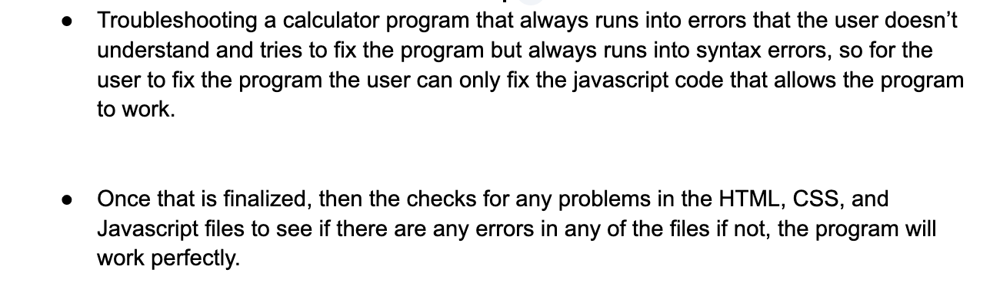
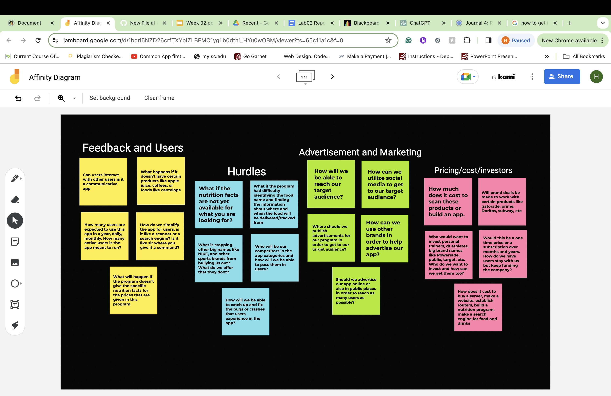

Persona Project: Building a persona to help people track their calories for health reasons

This screenshot is a persona that is built to help users understand how a calorie tracker is used to track people's calories

Troubleshooting a calculator program that always runs into errors that the user doesn’t understand and tries to fix the program but always runs into syntax errors, so for the user to fix the program the user can only fix the javascript code that allows the program to work. Once that is finalized, then the checks for any problems in the HTML, CSS, and Javascript files to see if there are any errors in any of the files if not, the program will work perfectly.

This screenshot explains how to track your calories properly not just that, but this diagram talks about the Feedback and Users, the Hurdles, Advertisement, Marketing, and Pricing/cost/investors.
This screenshot is a persona that is built to help users understand how a calorie tracker is used to track people's calories
This PDF talks about how the Nutrition app works for people when they purchase food whether it is homemade, fast food, and dine-in restaurants this app can help people give nutrition details about the food that they are eating.